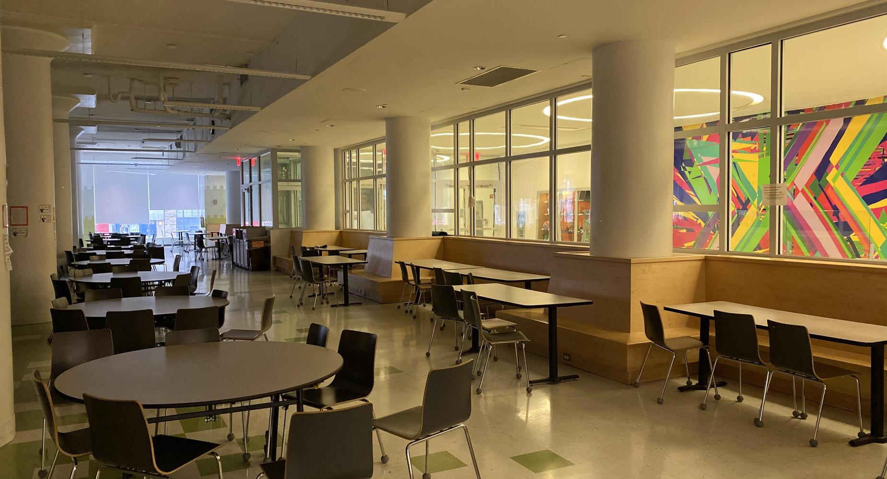
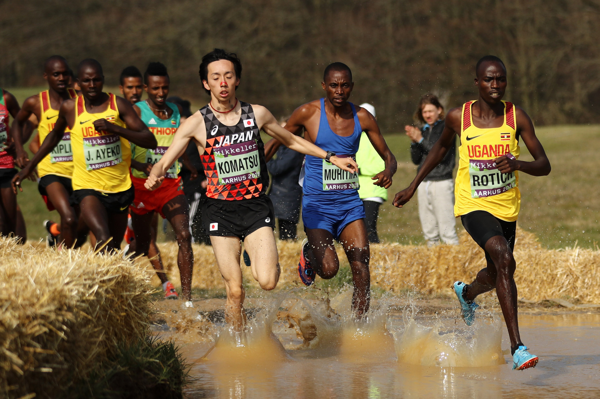

I am a rising senior at Beacon High School in New York City. I take the bus and train to get to school everyday. Attending the highly selective school has helped me with my skills of time management and public speaking. Since the school does not have regents, Students are assigned multiple presentation based projects that are assessed by a panels of teachers. This has helped me with my skills of presenting and outlining my process.

I listen to music everyday. I listen to music on my way to school, in school, at home, and etc. These are my favorite artists because they all have songs that represent different emotions and catchy melodies. For example, Drake album Take Care is perfection and encapsulates the feelings of regret and sadness while also feeling joy. Beyonce has music for if I am depressed or extremely hyper. Finally, The Weeknds catalog is perfecr for every mood whether its dramatic, happy, or sad. These artists music play a large role in my life.
I am not an atheltic person AT ALL. However, I do run Cross Country and Indoor Track. I started my junior year because I wanted to challenge myself and have fun afterschool. I enjoy the adrenaline and friends both offer me and I will be doing both my senior year.
I have three things I do in my spare time. Of course listening to music is one but I also like to watch movies and shows and draw. I have been drawing since I was very little and would have competitions with my friends to see who drew objects around us better. I also love to go to the movie theater with my friends and family and watch the new releases.